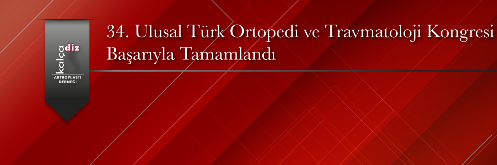

34.Ulusal Türk Ortopedi ve Travmatoloji Kongresi Başarıyla Tamamlandı
4–9 Kasım 2025 tarihleri arasında Antalya Susesi Otel’de düzenlenen 34. Ulusal Türk Ortopedi ve Travmatoloji Kongresi başarıyla gerçekleştirilmiştir.
Bu yıl kongre kapsamında, KADAD (Kalça ve Diz Artroplasti Derneği) desteği ile 3 KADAD ve 5 TOTBİD oturumu olmak üzere toplam 8 Kalça ve Diz Artroplasti oturumu gerçekleştirilmiştir.
Kalça ve diz artroplastisi alanındaki en güncel bilimsel ve klinik gelişmelerin detaylı biçimde tartışıldığı bu KADAD destekli oturumlar, katılımcıların yoğun ilgisiyle karşılanmış; salonlar tamamen dolmuştur. Yoğun katılım, alana duyulan akademik ilginin ve bilimsel paylaşım isteğinin güçlü bir göstergesi olmuştur.
Bir ulusal kongreyi daha KADAD olarak başarıyla tamamlamanın gurur ve mutluluğunu yaşıyoruz.
Kongrenin düzenlenmesinde emeği geçen tüm konuşmacılara, oturum başkanlarına, katılımcılara ve organizasyon ekibine teşekkür ederiz.

Resim Galerisi